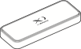
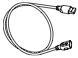

introduce
Thank You for Purchasing the "L-03D"
Before using your terminal, or when necessary, read this manual to ensure safe use and handling.
Before Using this Terminal
- L-03D supports LTE, W-CDMA, GSM/GPRS.
- Because this terminal uses radio waves, it may not function in locations where it is difficult for radio waves to penetrate, such as tunnels, underground passages, and some buildings in areas where radio wave signals are weak or out of the Xi/FOMA service area. Even when you are on a higher floor of a tall building or condominium and nothing blocks your view outside, this terminal may not be able to receive or transmit signals. Also communication may be interrupted even when the Antenna Indication Lamp on this terminal lights indicating a strong signal reception with 3 antenna indication bar.
- This terminal communicates via radio waves by converting voices into digital signals. If you move into an area where signal reception is poor, the digital signals may not be accurately decoded and what you hear may differ slightly from what was actually said.
- DOCOMO is not responsible for any economic losses incurred through lost communication opportunities caused by external factors such as malfunction or electrical outage.
- This terminal can be operated in Xi area, FOMA Plus-Areas and FOMA HIGH-SPEED Areas.
- This terminal does not support i-mode functions (i-mode mail, connection to i-mode sites (program) or i-αppli, etc.).
SIM unlock
This terminal supports SIM unlock. If you release SIM lock, you can use SIM by a carrier other than NTT DOCOMO.
- The SIM unlock service is provided at a docomo Shop.
- A SIM unlock charge is separately required.
- Note that it takes several days for SIM unlock.
- If you use a SIM other than by DOCOMO, LTE system is unavailable. And available services and functions will be limited. DOCOMO is not liable to any failures or malfunctions.
- For details of SIM unlock, refer to NTT DOCOMO website.
The latest information of this manual can be downloaded from the DOCOMO website.
- The URL of PDF for INSTRUCTION MANUAL
- http://www.nttdocomo.co.jp/english/support/trouble/manual/download/index.html
- ※ The URL and the information contained in the manual are subject to change without prior notice.
Basic Package
- L-03D Terminal (With Back cover L30, Warranty)

- L-03D INSTRUCTION MANUAL for Connection Guide
- USB Extension Cable (Sample)

How to Read this Manual
L-03D Manual is composed of "L-03D INSTRUCTION MANUAL for Connection Guide" and "L-03D INSTRUCTION MANUAL" (this manual).
L-03D INSTRUCTION MANUAL for Connection Guide
The following contents such as connection to computer, troubleshooting, specifications of L-03D are described.
- Contents/Precautions
- Before Using this Terminal
- Setting Up
- Appendix/Troubleshooting
L-03D INSTRUCTION MANUAL (this manual)
Besides the above contents described in "L-03D INSTRUCTION MANUAL for Connection Guide", the contents of configuring communication through special application are also written.
This manual is supplied with PDF. To view this manual, Adobe Reader (Version 6.0 or later is recommended) is necessary.
- L-03D Connection Manager
- Mobile Broadband
- Configuring Network Manually
- Overseas Use
- Please understand that in "L-03D INSTRUCTION MANUAL", "this terminal" refers to "L-03D".
- Note that in "L-03D INSTRUCTION MANUAL", "PC" refers to both "Windows PC" and "Mac".
- Operation procedures and images may differ depending on environment.
- Reprinting all or parts of this manual is prohibited.
- Information contained in this manual is subject to change without prior notice.
Features of the L-03D
"Xi" is a service of DOCOMO supported by LTE (Long Term Evolution) which is the international communication standard. FOMA (Freedom Of Mobile multimedia Access) is the name of a service provided by DOCOMO based on the W-CDMA system, which is certified as one of the global standards of 3rd generation mobile communication systems (IMT-2000).
Supported Xi data communication
The terminal supports data communication at a speed of up to 75Mbps for downloading and up to 25Mbps for sending.
※ Within a part of the Xi area.
- Refer to DOCOMO website for detailed supporting areas. Communication speed is theoretical values when sending and receiving data which does not show the actual ones. The actual communication speed depends on communication environment and network congestion.
- The FOMA area which is out of Xi area is also available.
Correspondence with the FOMA HIGH-SPEED Area
You can enjoy high speed communication (Best effort system) at a maximum of 14Mbps for receiving and 5.7Mbps for sending.
- Communication speed is theoretical values when sending and receiving data which does not show the actual ones. The actual communication speed depends on communication environment and network congestion.
- For details of areas supporting a maximum of 5.7Mbps for sending, view DOCOMO website.
- Sending and receiving data may become 384kbps even in the FOMA HIGH-SPEED area.
- Sending and receiving data become 384kbps in FOMA area out of FOMA HIGH-SPEED area.
International Roaming Service
Data communications from a PC are available through using 3G network or GPRS network in foreign countries.
"WORLD WING" is usually applied along with the contract of this terminal. Please contact a docomo shop or a docomo Information Center to confirm the details.
Safety Precautions
(ALWAYS FOLLOW THESE PRECAUTIONS)
- ■ Before using this terminal, read these "Safety Precautions" carefully so that you can use it properly. After reading the safety precautions, keep this manual in a safe place for later reference.
- ■ These precautions are intended to protect you and others around you. Read and follow them carefully to avoid injury, damage to the product or damage to property.
- ■ The signs below indicate the levels of danger or damage that may occur if the particular precautions are not observed.
|
|
This sign indicates that incorrect handling has a high possibility of causing death or serious injury. |
|---|---|
|
|
This sign indicates that incorrect handling poses a risk of causing death or serious injury. |
|
|
This sign indicates that incorrect handling poses a risk of causing slight injury or damage to the product or property. |
■ The following symbols indicate special warnings regarding product usage.
|
|
Denotes things not to do (prohibition). |

|
Denotes not to disassemble. |
|
|
Denotes not to use where it could get wet. |

|
Denotes mandatory instructions (matters that must be complied with). |
|---|
General Precautions for this Terminal and UIM
|
|
|
|---|---|
|
|
Do not use, store or leave the terminal in hot places (e.g. by the fire, near a heater, under a kotatsu, in direct sunlight, in a car in the hot sun). Fire, burns, or injury may result. |
|
|
Do not put this terminal or UIM in heating appliances such as microwaves or high pressure containers. Fire, burns, injury, or electric shock may result. |
|
|
Do not disassemble or remodel this terminal and its accessories. Fire, burns, injury, or electric shock may result. |
|
|
Do not get this terminal and its accessories wet with water, drinking water, pet urine, etc. Fire, burns, injury, or electric shock may result. |
|
|
|
|---|---|
|
|
Do not subject this terminal and its accessories to strong force, severe shocks, or throw them. Fire, burns, injury, or electric shock may result. |
|
|
Keep conductive foreign objects (metal, pencil lead, etc.) away from the USB connector. Do not insert such objects inside this terminal. Fire, burns, injury, or electric shock may result. |
|
|
Do not cover or wrap this terminal or its accessories with bedding, etc. while using. Fire or burns may result. |
|
|
Make sure to turn off the computer which is connected with this terminal before you go near a flammable gas such as gasoline fumes. Catching fire may result. |
|
|
|
|---|---|
|
|
Do not place this terminal or UIM on unstable locations such as wobbly tables or slanted locations. This terminal or UIM may fall, resulting in injury. |
|
|
Do not store this terminal or UIM in humid or dusty places, or in hot areas. Fire, burns, or electric shock may result. |
|
|
If children use this terminal or UIM, a guardian should explain the precautions and correct operations. The guardian should also make sure that the instructions are followed during use. Injury may result. |
|
|
Keep out of reach of babies and infants. Accidental swallowing or injury may result. |
Precautions for this Terminal
|
|
|
|---|---|
|
|
Do not get liquids such as water or foreign objects such as metal pieces or flammable materials into the UIM slot of this terminal. Fire, burns, injury, or electric shock may result. |
|
|
Turn off this terminal in places where use is prohibited such as airplanes or hospitals. Electronic devices or electronic medical devices may be adversely affected. Follow the instructions when using inside medical facilities. |
|
|
If you wear any implanted electronic medical devices, contact the manufacturer or dealer of the electronic medical device to ask about the effect from radio waves. Electronic medical devices may be adversely affected. |
|
|
Remove this terminal from USB port in places near high-precision electronic devices or devices using weak electronic signals. Electronic devices may be adversely affected by reasons such as malfunction. ※ Electronic devices that may be affected Hearing aids, implanted cardiac pacemakers, implanted defibrillators, other medical electronic devices, fire alarms, automatic doors and other automatically controlled devices. If you are using an implanted cardiac pace maker, implanted defibrillator or any other electronic medical device, consult the manufacturer or retailer of the device for advice regarding possible effects from radio waves. |
|
|
|
|---|---|
|
|
Do not use the broken terminal. Fire, burns, injury, or electric shock may result. |
|
|
If you use this terminal in a car, contact the car manufacturer or dealer to ask about the effect from radio waves. Depending on the type of a car, in-car electronic devices could be adversely affected. In this case, stop using this terminal immediately. |
|
|
Itching, rash or eczema may be caused depending on your physical conditions or predisposition. If an abnormality occurs, stop using this terminal immediately, and then seek medical attention. For the material of each part. » Material List |
|
|
Be careful not to get your finger caught in the parts when you close or open this terminal. Injury or other accidents may result. |
Precautions for the UIM
|
|
|
|---|---|
|
|
Be careful not to touch the edge of UIM when removing it. Injury may result. |
Notes on Using near Electronic Medical Equipment
The description below meets "Guideline on the Use of Radio-communication Equipment such as Cellular Telephones - Safeguards for Electronic Medical Equipment" by the Electromagnetic Compatibility Conference.
|
|
|
|---|---|
|
|
Be sure to adhere to the following regulations inside medical facilities.
|
|
|
Turn off the PC in crowded trains or other public places where implanted cardiac pacemaker or defibrillator wearers could be nearby. Operation of an implanted cardiac pacemaker or implanted defibrillator may be adversely affected by radio waves. |
|
|
f you use medical equipment such as an implanted cardiac pacemaker or implanted defibrillator, use the mobile terminal 22cm or more away from the implanted cardiac pacemaker or implanted defibrillator. Operation of medical equipment may be adversely affected by radio waves. |
|
|
Patients using electronic medical equipment other than implanted cardiac pacemakers or implanted defibrillators (using outside medical facilities for treatment at home, etc.) should check the influence of radio waves upon the equipment by consulting the manufacturer. Operations of electronic medical equipment may be adversely affected by radio waves. |
Material List
| Part | Material/Surface treatment |
|---|---|
| Exterior case (Front part) | PC |
| Exterior case (Back part : Back cover) | PC |
| Frame | PC+GF30% |
| Communication Status Lamp | Transparent PC |
| USB Connector/Bracket | PC |
| USB Connector | SUS |
Handling and Care
General Usage Guidelines
- ■ Keep this terminal away from water.
- This terminal and UIM are not waterproof. Do not use the terminal in places with high humidity such as a bath or where rain may get it wet. If you carry the card close to your body, moisture from sweat may corrode the internal parts causing a malfunction. Note that malfunctions deemed to be caused by water are not covered by the warranty, and may be impossible to repair. Since these malfunctions are not under warranty, even when repair is possible, it will be done at the user's expense.
- ■ Clean this terminal with a dry, soft cloth (Lens cleaning cloth).
- If this terminal is wiped with alcohol, paint thinner, benzine or detergent, the printing may disappear or color may fade.
- ■ Keep the connector contacts clean with a dry cotton swab.
- Clean the connector contacts with a dry cotton swab to prevent contacts from getting dirty which can result in intermittent connections. Be careful when cleaning the connector contacts.
- ■ Do not place the equipment near air conditioner outlets.
- Condensation may form due to rapid changes in temperature, and this may corrode internal parts and cause malfunction.
- ■ Do not place this terminal where excessive force will be applied to it.
- If this terminal is inserted to a full bag, or placed in a pocket and sat on, its internal PCBs may be damaged or malfunction. Such damage is not covered by warranty.
- ■ Read the individual manual attached to this terminal.
This Terminal
- ■ Avoid using in extremely high or low temperatures.
- This terminal should be used within a temperature range from 5 °C to 35 °C and a humidity range from 45 % to 85 %.
- ■ This terminal may adversely affect fixed phones, televisions or radios in use nearby. Use as far as possible from such appliances.
- ■ Keep a separate record of any information stored on this terminal and store the copies in a safe location.
- DOCOMO assumes no responsibility for the loss of any of your data.
- ■ Do not drop this terminal or subject it to shocks.
- Damage or malfunction may result.
- ■ Do not insert a USB connector to PC crookedly or do not pull it when it is inserted.
- Damage or malfunction may result.
- ■ Remove this terminal from the PC when transporting.
- Malfunction or damage may result.
- ■ It is normal for this terminal to become warm during use. You can continue to use it even when it is warm.
UIM
- ■ Do not put excessive force on the UIM when inserting or removing it into this terminal.
- ■ Note that DOCOMO assumes no responsibility for malfunctions occurring as the result of inserting and using UIM with another IC card reader/writer.
- ■ Always keep the IC portion of the UIM clean.
- ■ Clean the UIM with a soft, dry cloth (Lens cleaning cloth).
- ■ Be sure to keep a separate note of the information registered to this terminal.
- DOCOMO assumes no responsibility for the loss of any of your data.
- ■ Visit docomo Shop to return the UIM for the environmental purpose.
- ■ Do not scratch, touch carelessly or short circuit the IC portion.
- Data loss or malfunction may result.
- ■ Do not drop or give shock to the UIM .
- Malfunction may result.
- ■ Do not bend or put heavy things on the UIM.
- Malfunction may result.
- ■ Do not insert UIM into this terminal with labels or stickers attached on.
- Malfunction may result.
CAUTION
- ■ Do not use the modified this terminal. Using modified this terminal result in violating the law of Electromagnetic Compatibility.
- This terminal has been complied with technical standard of wireless equipment stipulated by law of Electromagnetic Compatibility. As a proof, "Technical standard compliance mark " is indicated in the inscription seal. If this terminal is modified by turning the screw to the left to disassemble, technical standard compliance becomes invalid.
Please do not use this terminal during the time when technical standard compliance is being invalid, since you are in violation of the law of Electromagnetic Compatibility.
- ■ Do not alter the basic software.
- Repairs may be refused as a modification of software.
- ■ Keep this terminal 15mm or more away from your body while communicating.